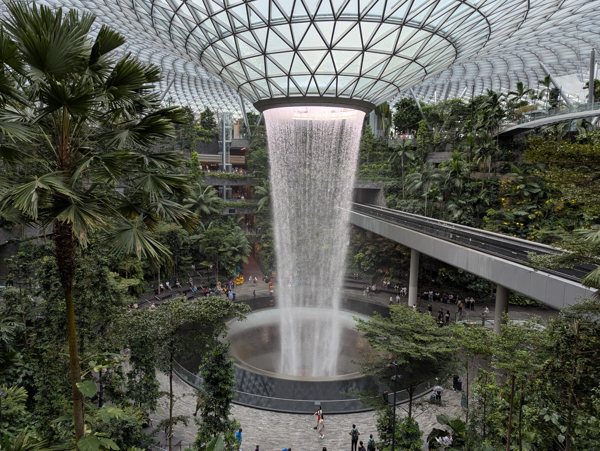

Latest Posts
Visiting the Jewel at Changi Airport, Singapore

The Jewel is an iconic shopping and entertainment complex located at Singapore's Changi Airport. Famous for its Rain Vortex—the tallest indoor waterfall—it's surrounded by lush tropical gardens, making it a perfect spot for relaxation and exploration.
Exploring the Eiffel Tower in Paris, France

The Eiffel Tower, one of the world's most recognizable landmarks, offers breathtaking views of Paris. Whether it's a daytime climb or a nighttime illumination, this architectural marvel never fails to amaze visitors.
Walking Along the Great Wall of China

Stretching over 13,000 miles, the Great Wall of China is an ancient wonder. A hike along the wall provides a glimpse into its historical significance and the stunning landscapes of rural China.
Unraveling the Mysteries of Machu Picchu, Peru

Perched high in the Andes Mountains, Machu Picchu is an iconic archaeological site of the Inca civilization. Its stunning ruins and breathtaking surroundings make it a must-visit destination for history enthusiasts and adventurers alike.
Marveling at the Grand Canyon, USA

The Grand Canyon's vast expanse of layered red rock reveals millions of years of geological history. Whether you're hiking, rafting, or enjoying the views from the rim, it's an unforgettable experience.